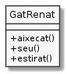

Accions d’un objecte¶
Un dels avantatges de la POO és que podem tractar peces de codi com si
tinguessin una mena de personalitat pròpia. És el que es coneix com
la metàfora de la POO. Així, podem imaginar que els objectes ens
responen quan els fem consultes, com ara renat.estaDret() que hem vist
abans.
A banda de fer consultes, podem imaginar que li demanem que faci coses.
Això ja ho podem fer. Per exemple, podem demanar-li que es posi dret tot
cridant renat.setPosicio("dret"). Amb tot, encara ho podem fer més
natural.
Tornem a ampliar el nostre pacient amic Renat.

Aquest diagrama UML ens mostra tres nous mètodes o serveis:
aixecat(): fa que Renat es posi dret.seu(): fa que Renat s’assegui.estirat(): fa que Renat s’estiri.
Amb els nous mètodes, la interacció amb Renat comença a ser força natural. Fixa’t per exemple, en la següent conversa:
Si Renat està dret que s’assegui.
Això en codi i aprofitant els nous mètodes, vindria a ser:
if (renat.estaDret()) {
renat.seu();
}
Compara-ho amb la versió sense mètodes naturals:
if (renat.getPosicio().equals("dret")) {
renat.setPosicio("assegut");
}
Et toca programar!
 Exercici 04_16. En Renat està ensinistrat!
Exercici 04_16. En Renat està ensinistrat!
Exercici 04_17. En Renat és assessinable